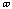
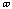

The Linear Prediction expressions
The Linear Prediction expressions
Extract from the manual
The Linear Prediction module is new in the GIFA program with the version 2.5. It is presented in a modular form which permits to virtually realize anything you may think of, without any change in the program. The price to pay for it is that sometimes you need to think a little to perform a simple processing. You will find in the following a quick overview of the theory behind Linear Prediction, which should permits you to use the commands effortlessly. The recipes for processing will end this presentation.
The Linear Prediction expressionsThe Linear Prediction principle lies in a modelization of the signal, where a point xn of the FID is related to the P previous ones with the following expression:
[1]
or from the p following ones :
[2]
called the Linear Prediction expressions (even though eq [2] seems to predict from what is already known). The afi and the abi are called respectively the forward prediction coefficients and the backward prediction coefficients (also called sometimes, the forward and backward autoregressive coefficients).
This modelization is exact in the case of an FID composed only of exponentially decaying sinusoids without noise, in which case the value of P is the number of frequencies present in the FID (true only if eqs [1] and [2] are in complex, which will always be assumed in the following).
The Prediction Error ExpressionsHowever in the real life there is nothing such as an FID without noise. In this case Eqs [1] and [2] are only approximate, and have to be expressed now as :
[3]
and
[4]
where
and
 are the residual differences between the predict and the actual values.
are the residual differences between the predict and the actual values.
These equations can be rewritten as :
[5]
and
[6]
One can see that what is predicted in [5] and [6] is the noise in the FID, whence the name : prediction error.
Roots of the Prediction Error polynomialFrom eqs [5] and [6] can be constructed two complex polynomials, the coefficients of which are the values of the prediction coefficients :
 and
[7]
and
[7]
These polynomials, as all complex polynomials do, have exactly P different roots. The roots of the forward prediction error polynomial (PEf) are related with the signal present in the noisy FID in the following way : there is one root per signal; the frequency of each signal is related to angle of the complex root with the real axis; the damping of each signal is related to to the module of the complex root.
If the
signal has a damping
 and a frequency

then the
and a frequency

then the
 root of PEf(z) is :
root of PEf(z) is :
( is the modulus and is the angle)
with and [8]
where is the dwell time of the acquisition.
The roots of the backward prediction error polynomial (PEb) are related in a similar way to the signal :
with
 and
[9]
and
[9]
So the modules of backward roots are the "opposite" of the modules of forward roots :
[10]
So we have made here a big step for the analysis of the signal : *if the signal is composed of damped sinusoids, *if we know the value of P *if we can compute the prediction coefficients; Then we can extract the frequencies and the line-widths (the dampings) of the signal presents in the FID. We are going to see how we can handle all those ifs, let us start with the last one :
Obtaining the prediction coefficientsThere are several ways for obtaining evaluations of the prediction coefficients from the data set itself. Only two methods have been installed in GIFA so far : Burg and LP-SVD. Most of them are based on the fact that eq [1] (or [2], the problem is completely symmetric) can be seen as a matrix relation :
X = Y * A [11]
with X = (xn) Y = (ykl) = xk-l A = (afi)
and Y is a P x (N-P) matrix.
In this matrix relation, X and Y can be constructed from the data set, A is unknown. This linear system must be inverted in order to find the values afi.
Some remarks may be made about this matrix problem : *the matrix Y has P rows and N - P columns, where N is the number of acquisition points *the system is not symmetric, for there is no reason to have the number of acquisition points related to the number of signals, *there is no way to extract more than f(N;2) sinusoids from a FID of length N *usually (at least not in 3D or 4D) N is large compared to P, so the linear system is highly redundant *The matrix Y has a very special form, constructed only from a single vector, and as such very redundant. It is called a Toeplitz matrix *the Toeplitz form of the matrix Y should help the inversion step.
The Burg MethodThe Burg method uses the three last points (and a couple of others) to perform the inversion. The main idea is that the Burg method is meant to be applied on stationary signals (for which the damping are null) and for which the forward and the backward prediction coefficient are equal. With these hypothesis, the Burg algorithm inverts the system of equation [11] in a very efficient manner.
The proof of the method uses a maximization of the Entropy quantity in the time domain, and as such has been called very inadequately (by Burg himself though) a Maximum Entropy (or mem) method. This should note be confused the Maximum Entropy (or MaxEnt) method present elsewhere in GIFA programme, for which a real maximization of the entropy of the spectrum is performed numerically during the process of the computation.
The algorithm is very fast (usually faster than a Fourier transform) and performs very well on large data-set (processing time is in O(NxP) ). However the NMR data-set does not usually fulfil the assumptions made on the signal : i.e. stationarity of the signal, so the Burg method will be safer to use on highly truncated FID where the dampings are barely visible, rather that on fully relaxed FID.
The LP-SVD MethodA more general and classical approach to the inversion of the system in eq [11] is possible. Several methods have been proposed, so far GIFA only proposes one other method : the SVD method. It is based on the Singular Values Decomposition (SVD) of the matrix Y from which the system can then be inverted.
The SVD decomposition is a kind of generalized diagonalization procedure for non symmetric matrix. The matrix Y is decomposed as follows :
[12]
where U is a PxP unitary matrix and V a
(N-P)x(N-P) unitary matrix.
 is a P x (N-P) diagonal matrix whose diagonal elements
are the so-called singular values of the matrix Y. These singular values are
positive numbers, and the system is usually rearranged to have the singular
values arranged in descending order. A generalized inverse of Y :
can be constructed :
is a P x (N-P) diagonal matrix whose diagonal elements
are the so-called singular values of the matrix Y. These singular values are
positive numbers, and the system is usually rearranged to have the singular
values arranged in descending order. A generalized inverse of Y :
can be constructed :
[13]
where is a (N-P) x P diagonal matrix with values on the diagonal for non-zero singular values in and 0 for null singular values.
The singular values decomposition is a very lengthy (processing time is in ) but very stable process. Form this decomposition, a generalized inverse can then be constructed, and a solution of the system [11] can be computed. There is no assumption made on the stationarity, and as such, fully relaxed FID can even be safely processed (as usual better is more expensive!). The solutions of the backward and of the forward system are then different. However the SVD analysis can be performed once, and the solutions of the forward and of the backward system are then computed from the same decomposition.
The second Least-SquareFrom the analysis performed in the previous paragraph, we are now able to compute an evaluation of the predictive coefficients. From this coefficients we can then build the prediction error polynomials. This polynomial can then be rooted, and thus the frequencies and the dampings present in the signal evaluated. The next step will be to evaluate the amplitudes and the phases associated with each located frequencies.
This step is called the second least-square (sometimes also the Prony's method). From the values of the damping and the frequencies, a matrix relation can easily be constructed, the solution of which are the amplitudes and phase of each lines :
X = Z*A [14]
where X = (xn) the point of the FID,
where
is
the
 root
of a PEf polynomial
root
of a PEf polynomial
and A = (Ap) where is the complex amplitude (amplitude and phase) of the signal.
The system of eq [14] is inversed by a simple least square operation, involving the inversion of the matrix : Z*Z which is square.
Obtaining the spectrumFrom all the above mentioned operations, it has been possible to compute in sequence, the autoregressive coefficients; the roots of the PE polynomial from which are evaluated the frequencies and the damping of the sinusoids present in the signal; and finally the amplitude and phase of each line. The linear prediction methods has thus generated a list of parameters describing the signal, not a per se spectrum. Sometimes a spectrum is more speaking than a simple list of peaks. It is obviously straight forward to generate spectrum from the peak table. However it has been preferred (because less prone to errors and usually faster) to generate an FID rather than a spectrum. This FID can always be then Fourier transform to generate a spectrum.
Burg in his original work, where he proposed his well known method for computing the autoregressive coefficients, proposed also a method for generating a spectrum from the simple evaluation of the autoregressive coefficients. This method has also be included in the program, mostly for historical reasons. The spectrum thus generated is a spectral density function, and does not hold any phase information.
What is a minimum phase polynomialWe have seen that the rooting of a polynomial is a central step in data processing by linear prediction. At this point, it is worth noting a couple of properties associated with the location of the roots.
The roots are located on the complex plane. A very important location on this plane is the unity circle, i.e. the locus of all complex numbers with a modulus equal to one. As noted in eq [8], for the forward analysis, the damping of the detected signals is related with the modulus of the associated root. The closer the root is to the 0 point, the wider the line is; the closer the root is to the unity circle, the sharper the line is. Roots located on the unity circle itself correspond to stationary signals (delta line shape); roots outside the unity circle are not allowed in the forward analysis.
A polynomial is said to be minimum phase when all its roots are located strictly inside the unity circle. Such a polynomial will correspond to only decaying signals. This polynomial, when used for data prediction in the forward direction as in eq [3] will generate decaying signal. On the other hand, if a non phase minimum polynomial is used for prediction in the forward direction, certain growing component will be present in the predicted data. This will lead to unusable data-sets in the better cases, to complete instability and crash in the worst ones.
One property of the Burg analysis, is that the produced polynomial is always minimum phase, however SVD analysis does not have this property, as we will see below.
Forward and Backward AnalysisIn the SVD analysis, the forward and the backward are two separated analyses. In the forward analysis, roots related to the signal will be located inside the unity circle, as explain above. In the backward analysis, as can be seen from eq [9], the roots related to the signal will be located outside the unity circle. This is normal, since, in the backward prediction, the signal appears as growing with the time. However in both analyses, the extraneous roots created during the analysis by the noise present in the data-set, will always be located inside the unity circle. This property permits, in the backward analysis to separate the noise-related roots from the signal-related roots simply by looking to their modulus. After the backward analysis, the root can always be reflected inside the unity circle, as shown in eq [10] to generate the roots which would have been obtain by a forward analysis, but now cleaned from the noise-related roots.
There is a third possibility in GIFA which consists in computing both the forward and backward roots (as was proposed by MADelsuc, F.Ni, and G.C.Levy in J.Magn.Reson. 73 p548(1987) ). Then, after reflection of the backward roots, the roots matching in the two analysis are declared as "good" and the other are rejected. This has the effect of improving the definition of the roots and of improving the rejection of the noise-related roots.
The Different CommandsThe whole linear prediction set-up is performed through a very modular approach. Each step of the analysis are separated, and all the relevant commands use mnemonics relative to each step :
* The starting data set : DT
* The Singular Value Decomposition : SVD
* The auto regressive coefficients : AR
* The extracted roots : RT
* The peak table : PK
* The simulated spectrum : SP
Each analysis step transforming XX to YY has the command XX->YY (pronounce XX to YY) and has the help file XX2YY.
Each step involving the parameter P (as in eqs [1-7]) will use for it the value of the variable ORDER which should be set before hand to a correct value.
The following commands are available
DT->AR Performs the Burg analysis of eq [11] Will only work on complex data-sets (itype 1) see note below.
DT->SVD n Performs the SVD analysis of eq [11]. n is the size of the data set taken into account for the analysis. Thus compute on a $order x (n-$order) matrix. Will only work on complex data-sets (itype 1) see note below.
SVDLIST Lists the computed SVDs.
SVDCLEAN1 n y/n
Permits to modify the SVD held in the program, by keeping only the n largest
SVD. It has been shown that some noise present in the signal could thus be
reduced. If the flag is yes, the power present in the
removed SVD is subtracted
form the remaining SVDs. i.e.
SVDCLEAN2 level y/n
Permits to modify the SVD held in the program, by keeping only the SVD larger
than level. It has been shown that some noise present in the signal could thus
be reduced. If the flag is yes, the power present in the
removed SVD is
subtracted form the remaining SVDs. i.e.

SVD->AR p Performs the inversion step from the SVD analysis of eq [11]. p is either 1, 2 or 3 for forward, backward or both analyses.
SVD->DT Permits to generate back a data-set from the modified SVDs. However after modify the SVDs and regenerating a new matrix Y' (see eqs [11] and [12]) the Y' matrix is no longer Toeplitz, so some modifications are performed to generate a new data-set.
ARLIST p Lists the computed AR. p is either 1, 2 or 3 for listing forward, backward or both AR.
AR->RT p Performs the rooting of the PE polynomials. p is either 1, 2 or 3 for forward, backward or both analyses. This is probably the more unstable operation of the whole process (if not the slowest, DT->SVD being another good candidate for it), the rooting of a high degree polynomial is a well known problem in applied mathematics, and there is no good method for it. The routine we are using here seems to be fairly stable for degrees up to 300.
AR->RT2 p is equivalent to AR->RT but seems to be more stable for very large polynomial. Has been given by P.Koehl, but not thoroughly tested.
AR->DT n p Performs prediction of the missing points, using eqs [1] or [2], either in the forward direction or in the backward direction. p is either 1 or 2 for forward or backward analyses. n is the size of the data-set after the prediction.
AR->SP Performs the Burg spectrum analysis of the backward AR, computed on the size of the current data set, however the contents of the buffer is not used. Generates only modulus spectra.
BURG n Will perform an in-place forward prediction, using the Burg method. n
will be the size of the final data-set . The command is equivalent to
performing :
DT->AR AR->DT n 1
The prediction is performed
in-place and the AR and DATA are not loaded; this command can thus be used when
processing large 2D or 3D data-sets.
RTLIST p Lists the computed roots. p is either 1, 2 or 3 for listing forward, backward or both lists.
RTCLEAN p Removes the roots with modulus smaller than one. p is either 1 or 2 for cleaning forward or backward roots. Modifies the current value of ORDER.
RTINV p Performs the inversion of eq [10] on all the roots. p is either 1 or 2 for inverting forward or backward roots. With the inversion, the roots are moved to the opposite positions, i.e. bacward roots become forward, etc...
RTREFLECT Performs the inversion of eq [10] on the roots with modulus greater than one.
RTMATCH Finds P' matching roots from the forward and backward roots. Modifies the current value of ORDER.
RTSELECT Keeps only selected roots. Modifies the current value of ORDER.
RT->PK n p d Performs the second least square, thus computing the amplitudes and phases, and load the peak table. n is the size of the data-set taken into account for the analysis. p is either 1, 2 or 3 for forward, backward or "matched" analysis. d is the dead-time in second of the first point (0 if no dead time)
RT->AR p Computes the PE polynomial from its roots. p is either 1, 2 or 3 for forward, backward or both analyses.
PKLIST Lists the content of the peak table. frequencies and widthes are in UNIT, phases are in degrees, amplitudes and intensities are in arbitrary units.
PKSELECT Keeps only selected peak entries.
PK->DT Computes a simulated FID from the content of the peak table.
FREQLIST Will list the index in the peak table which hold entries with frequency values in a given range of frequencies. The thus selected entries can then be selected with the RTSELECT command.
WRITEC f_name Write the current data-set using a Linear Predicitive Coding algorithm. The principle is to perform a simple forward analysis using Burg method, and then to store the AR parameters and only the difference between the predicted data point and the actual one. This difference being small, a important gain in place is thus obtained, typically up to 60%. No information is lost in the process, however it will only work on FID and not on spectra.
READC f_name Read in a data set coded with the previous command.
Notes :
The value for ORDER, the number of SVDs, the number of AR, the number of roots and the number of peaks are available with the internal GIFA variables : respectively $ORDER, $NSVD, $NAR, NRT and $NPK1D, which can be used within macros.
Most of these commands may work on the forward or backward analysis, it is indicated with a parameter having the value either 1 or 2 respectively. The command RTMATCH creates a new series of "matched" roots that can then be used by the RT->PK step. The command RTINV will move one set of roots into the other one, i.e. forward roots will become backward after a RTINV step.
The command DT->SP is obviously absent since this is nothing but a Fourier transform!
The commands DT->AR BURG and DT->SVD (in fact all the commands dealing with the FID) will only work on complex data-sets. You can always convert a real data-set to complex by using the command :
RFT IFT
From this set-up, let us check how we can performed useful operations :
Predicting missing pointsThe prediction of missing points can be used in 2 typical cases : * when the data set is truncated and the Fourier transform is to be performed on a larger number of points, in this case a forward prediction will be used, * when the first point of the FID are lost or perturbed, thus leading to strong baseline distortions in the spectrum, in this case a backward prediction will be used. The principle is the following : compute a set of AR, and use eqs [1] or [2] for the prediction.
When the number of points to be predicted is large, the PE polynomial used should always be minimum phase. When the number of points is small (for instance in first points problem) a non minimum phase may be tried.
Truncation :
Assume a two fold zerofilling, ORDER should have been set before hand.
Burg Analysis (always minimum phase), this one is very fast.
DT->AR AR->DT ($si1_1d*2) 1
or in a equivalent manner :
BURG 1k
SVD Analysis with no minimum phase insurance (will be slow )
DT->SVD % SVD->AR 1 AR->DT ($si1_1d*2) 1
SVD Analysis with minimum phase insured (will be very slow !)
DT->SVD % SVD->AR 1 AR->RT 1 RTREFLECT 1 \
RT->AR 1 AR->DT ($si1_1d*2) 1
First points :
Assume a data set with the first $mis points missing
(obtained with : reverse chsize ($si1_1d-$mis) reverse )
DT->AR AR->DT ($si1_1d+$mis) 2 ;with Burg
DT->SVD 20 SVD->AR 2 AR->DT ($si1_1d+$mis) 2 ;With SVD (not so slow)
Extending a 2D with BURG :
This macro will extend the F1 dimension of a 2D with the Burg method. Definitely better than a simple zero-filling, the result should be then processed with a strong aposization in order to damp the constructed point (for instance a SQSIN).
dim 2 set inisize = $si1_2D ; remember old size
order (inisize/2)
chsize (power2(2*%)) % ; prepare room for burg
set finalsize = $si1_2D
initinprogress $si2_2d ; for a nice display
for i = 1 to $si2_2d
inprogress $i
col $i ; select column
dim 1 chsize $inisize burg $finalsize ; process
dim 2 put col $i ; put it back
endfor
Spectral analysisSpectral analysis consists in generating either a spectrum or a peak table from the linear prediction analysis. Several methods are available after setting the value for ORDER :
Classical Burg method (still sometime called memI)
dt->ar chsize (%*2) ar->sp
Classical LP-SVD method, from Kumaresan & Tuft
dt->svd % ; compute SVDs
svd->ar 2 ar->rt 2 ; always backward !
rtclean 2 rtinv 2 ; bring back to forward analysis
rt->pk $si1_1d 1 pklist %% ; got the peak table
Forward and backward LP-SVD (assuming $K lines in the spectrum)
dt->svd % ; compute SVDs
svd->ar 3 ar->rt 3 ; forward and backward
rtmatch $K rt->pk $si1_1d 3 pklist %% ; got the peak table
From the LP-SVD, one gets the peak table, from the peak table, the spectrum is recomputed as follow :
pk->dt ft
Cadzow procedure for removing the noise with SVD, assume $iter iterations and $k lines. Be carefull this one is slooowww. Follow the Cadzow procedure with a FT or a LPSVD analysis.
for i = 1 to $iter
order ($si1_1d*0.4)
dt->svd % svdclean1 $k y svd->dt
endfor
How to handle ORDERThe variable ORDER holds the order of the prediction equations (eqs [1] and [2]). In a noise- free signal ORDER should be equal to the number of sinusoids present in the signal. In real processing the value of determine the quality of the processing, it also determines the speed of it !
Several typical cases may occur :
* processing a good quality FID (for instance truncated), then ORDER should be set to a value slightly larger than the number of lines in the spectrum
* processing very low signal-to-noise systems. In this case ORDER should set to a value larger than the number of lines and SVDCLEAN, RTMATCH and the relevant commands should be used.
* processing a data-set with non-lorentzian lines (non exponential relaxation, bad shimming, unresolved fine structure, etc..). In this case, a line is computed as a sum of lorentzian lines, in this case, the value of ORDER to be used is much larger than the apparent number of lines since several lorentzian lines are needed to evaluate a single ones.
* Evaluating prediction equations only for the reconstruction of few missing points. In this case the value of ORDER is not very important, and any large enough value should do.